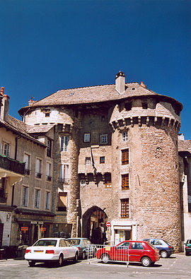
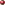
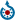

Marvejols
De Wikipedia, la enciclopedia libre
| Marvejols Maruèjols |
||
|---|---|---|
| Comuna de Francia | ||
|
||
|  Porte du Soubeyran. |
||
 
Marvejols
Maruèjols Maruèjols en Francia |
||
| País | ||
| • Región | Languedoc-Rosellón | |
| • Departamento | Lozère | |
| • Distrito | distrito de Mende | |
| • Cantón | cantón de Marvejols (chef-lieu) | |
| • Mancomunidad | Communauté de communes du Gévaudan | |
| Ubicación | 44°33′15″N 3°17′27″E / 44.5542, 3.2908Coordenadas: 44°33′15″N 3°17′27″E / 44.5542, 3.2908 (mapa) | |
| • Altitud | 640 m msnm (mín.:632 m, máx.:918 m) |
|
| Superficie | 12,45 km² | |
| Población | 5501 hab. (1999) | |
| • Densidad | 441,85 hab./km² | |
| Gentilicio | Marvejolais (en francés) | |
| Código postal | 48100 |
|
| Alcalde | Jean Roujon (en la lista de la UMP MARVEJOLS PASSION PARTAGE) 2008 - 2014 |
|
| Código INSEE | 48092 | |
| [editar datos en Wikidata] | ||
{kind=link}
{kind=link}
Marvejols (en occitano Maruèjols) es una población y comuna francesa, situada en la región de Languedoc-Rosellón, departamento de Lozère, en el distrito de Mende. Es el chef-lieu del cantón de Marvejols.
En 2000, la ciudad fue laureada con el Premio de Europa, una distinción otorgada anualmente por el Consejo de Europa, desde 1955, a aquellos municipios que hayan hecho notables esfuerzos para promover el ideal de la unidad europea.
Demografía[editar]
| 1962 | 1968 | 1975 | 1982 | 1990 | 1999 | ||||||||||||||||||||||||||||||||||||||||||||||||||||||||||||||||||||||||||||||||||||||||||||||||||||||||||||||||||||||||||||||||||||||||||||||||||||||||||||||||||||||||||||||||||||||||||||||||||||||||||||||||||||||||||||||||||||||||||||||||||||||||||||||||||||||||||||||||||||||||||||||||||||||||||||||||||||||||||||||||||||||||||||||||||||||||||||||||||||||||||||||||||||||||||||||||||||||||||
|---|---|---|---|---|---|---|---|---|---|---|---|---|---|---|---|---|---|---|---|---|---|---|---|---|---|---|---|---|---|---|---|---|---|---|---|---|---|---|---|---|---|---|---|---|---|---|---|---|---|---|---|---|---|---|---|---|---|---|---|---|---|---|---|---|---|---|---|---|---|---|---|---|---|---|---|---|---|---|---|---|---|---|---|---|---|---|---|---|---|---|---|---|---|---|---|---|---|---|---|---|---|---|---|---|---|---|---|---|---|---|---|---|---|---|---|---|---|---|---|---|---|---|---|---|---|---|---|---|---|---|---|---|---|---|---|---|---|---|---|---|---|---|---|---|---|---|---|---|---|---|---|---|---|---|---|---|---|---|---|---|---|---|---|---|---|---|---|---|---|---|---|---|---|---|---|---|---|---|---|---|---|---|---|---|---|---|---|---|---|---|---|---|---|---|---|---|---|---|---|---|---|---|---|---|---|---|---|---|---|---|---|---|---|---|---|---|---|---|---|---|---|---|---|---|---|---|---|---|---|---|---|---|---|---|---|---|---|---|---|---|---|---|---|---|---|---|---|---|---|---|---|---|---|---|---|---|---|---|---|---|---|---|---|---|---|---|---|---|---|---|---|---|---|---|---|---|---|---|---|---|---|---|---|---|---|---|---|---|---|---|---|---|---|---|---|---|---|---|---|---|---|---|---|---|---|---|---|---|---|---|---|---|---|---|---|---|---|---|---|---|---|---|---|---|---|---|---|---|---|---|---|---|---|---|---|---|---|---|---|---|---|---|---|---|---|---|---|---|---|---|---|---|---|---|---|---|---|---|---|---|---|---|---|---|---|---|---|---|---|---|---|---|---|---|---|---|---|---|---|---|---|---|---|---|---|---|---|---|---|---|---|---|---|---|---|---|---|---|---|
| 3934 | 4490 | 5296 | 5573 | 5476 | 5501 | ||||||||||||||||||||||||||||||||||||||||||||||||||||||||||||||||||||||||||||||||||||||||||||||||||||||||||||||||||||||||||||||||||||||||||||||||||||||||||||||||||||||||||||||||||||||||||||||||||||||||||||||||||||||||||||||||||||||||||||||||||||||||||||||||||||||||||||||||||||||||||||||||||||||||||||||||||||||||||||||||||||||||||||||||||||||||||||||||||||||||||||||||||||||||||||||||||||||||||
| Para los censos de 1962 a 1999 la población legal corresponde a la población sin duplicidades (Fuente: INSEE [Consultar]) |
|||||||||||||||||||||||||||||||||||||||||||||||||||||||||||||||||||||||||||||||||||||||||||||||||||||||||||||||||||||||||||||||||||||||||||||||||||||||||||||||||||||||||||||||||||||||||||||||||||||||||||||||||||||||||||||||||||||||||||||||||||||||||||||||||||||||||||||||||||||||||||||||||||||||||||||||||||||||||||||||||||||||||||||||||||||||||||||||||||||||||||||||||||||||||||||||||||||||||||||||
Enlaces externos[editar]
- INSEE
- Elecciones municipales de 2008
-  Wikimedia Commons alberga contenido multimedia sobre Marvejols. Commons
{kind=link}